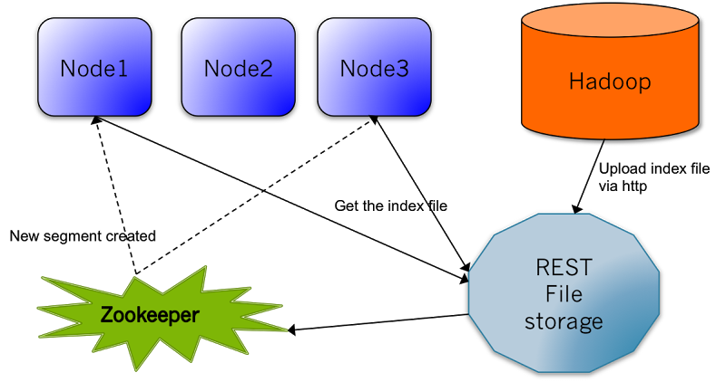

In the previous part we've learned how to push the data into the SenseiBA node running in the standalone mode. For a big cluster this approach is not viable, we can not copy csv files across servers in the datacenter. The segment is pushed to the cluster via http. Once the segment is uploaded to a signle SenseiBA node, it would atomatically be assigned to one of the partitions. This information is saved to zookeeper. All other Sensei nodes are subscribed to zookeeper changes. Once they receive the notification that the new segment arrived, they would pull the data from the initial node. Here is the diagram:

The SenseiBA is installed. Pointing to $SENSEIBA_HOME
In the previous tutorial we've downloaded the 1987.csv file containing the departure/arrival stats. Let's build the SenseiBA segment out of it.
Run the command:
$SENSEIBA_HOME/bin/build-segment.sh seg_1987 1987.csv .
You can specify some additional properties
The seg_1987.tar.gz file should be created for you in the working dir. It's essentially the indexed version of 1987.csv
Zookeeper manages SenseiBA's network topology or cluster.
Start your Zookeeper instance: (You can start your own Zookeeper cluster by following instructions here), From $SENSEIBA_HOME
./bin/zookeeper-server-start.sh config/zookeeper.propertiesYou can shut it down by running:
./bin/zookeeper-server-stop.shWith Zookeeper running, we can start a Sensei node serving SenseiBA node listening on port 8080:
In $SENSEIBA_HOME, start your SenseiBA node by pointing to the Cluster example configuration directory:
./bin/start-sensei-node.sh examples/configNow it's time to ingest some data
Point your favorite browser to: http://localhost:8080. To make sure that theSenseiBA is running
Let's upload the segment via http:
curl -F seg_1987=@seg_1987.tar.gz http://localhost:8089/filesNow we can check whether the upload is succesful. Go to http://localhost:8089/segments/. You can see smth like this:
{
"0": {},
"1": {"seg_1987": {
"pathUrl": ["http://172.16.56.114:8089/files/seg_1987"],
"segment.index.version": "001",
"segmentId": "seg_1987",
"timeCreated": "1357598362160"
}},
"2": {},
"3": {},
"4": {},
"5": {},
"6": {},
"7": {}
}
This shows, that seg_1987 was assigned to the partition 1. And it can be downloaded via the path http://x.x.x.x:8089/files/seg_1987
Let's also go to the web console: http://localhost:8080. And run the query:
select distinctCount(Origin)You should see 10 matching documents in the response along with the distinctCount result at the bottom
Shortly we would add a section about the fancy segment management UI. Meanwhile we can use rest commands
http://localhost:8089/segments/1/seg_1987?move=2 would move the segment to the partition 2
http://localhost:8089/segments/1/seg_1987?delete will delete the segmentThis section will answer how to deploy SenseiBA in the distributed way
Let's deploy two SenseiBA nodes that will be a part of a single cluster. This deployment needs to happen on two separate machines
The deployment would be based on the following sensei.properties
On each node make sure that
sensei.search.cluster.zookeeper.url For node1 change
sensei.node.partitions0-3For node2 change
sensei.node.partitions4-7For node2 we also need to modify the
sensei.node.idto value2
Now we are ready to start two SenseiBA search instances by running
./bin/start-sensei-node.sh examples/config